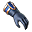
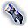
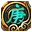

Rukavice
Na serveru Razathor jsou kostýmy nahrazeny novým předmětem - levou a pravou rukavicí. Rukavice jsou speciální předměty, do kterých můžete vložit až 3 různé runy, které poskytují různé bonusy.
Navíc je možné přidávat nové bonusy do rukavic pomocí předmětů "Zesílit kostým" a "Začarovat kostým"
Pokud budete chtít později změnit runy nebo samotnou rukavici, můžete použít Runový kámen, kterým lze odebrat poslední vloženou runu (50% šance!!). Poté ji můžete opětovně použít a vložit do jiné rukavice.
Všechny předměty spojené s rukavicemi jsou dostupné jak v Itemshopu, tak ve hře
| Rukavice | Informace o rukavici |
|---|---|
|  | Modrá rukavice → Rukavice přidává: Max ZB +500, Vitalita +4 |
| Červená rukavice → Rukavice přidává: Max ZB +500, Inteligence +4 | |
| Zdobená rukavice → Rukavice přidává: Max ZB +500, Síla +4 | |
| Zlatá rukavice → Rukavice přidává: Max ZB +500, Pohyblivost +4 | |
| Červená rukavice + → Rukavice přidává: Max Max ZB +1000, Šance na kritický zásah +8% | |
| Zdobená rukavice + → Rukavice přidává: Max ZB +1000 , Odolnost vůči monstrům +4% | |
|  | Modrá rukavice + → Rukavice přidává: Max ZB +1000, Silný proti příšerám +6% |
| Zlatá rukavice + → Rukavice přidává: Max ZB +1000, Silný proti pololidem +6% |
| Runa | Informace o runě |
|---|---|
| Runa života → Runa přidává: +500 ZB, lze vložit do jakékoliv rukavice | |
 |
Runa lidí → Runa přidává: Silný proti pololidem +8%, lze vložit do jakékoliv rukavice |
| Runa pohybu → Runa přidává: Rychlost pohybu +5%, lze vložit do jakékoliv rukavice | |
| Runa rychlosti → Runa přidává: Rychlost útoku +5%, lze vložit do jakékoliv rukavice | |
| Runa zkušeností → Runa přidává: 10% šance na bonus BZK, lze vložit do jakékoliv rukavice | |
| Runa příšer → Runa přidává: Silný proti příšerám +5%, lze vložit do jakékoliv rukavice | |
|  | Runa kamenů → Runa přidává: Silný proti kamenům +5%, lze vložit do jakékoliv rukavice |
 |
Runa bossů → Runa přidává: Silný proti bossům +5%, lze vložit do jakékoliv rukavice |
| Runový kámen | Informace o runovém kameni |
|---|---|
| Runový kámen → Pomocí tohoto kamene lze odebrat naposledy vloženou runu do rukavic. Existuje 50% šance, že se runa zničí. |